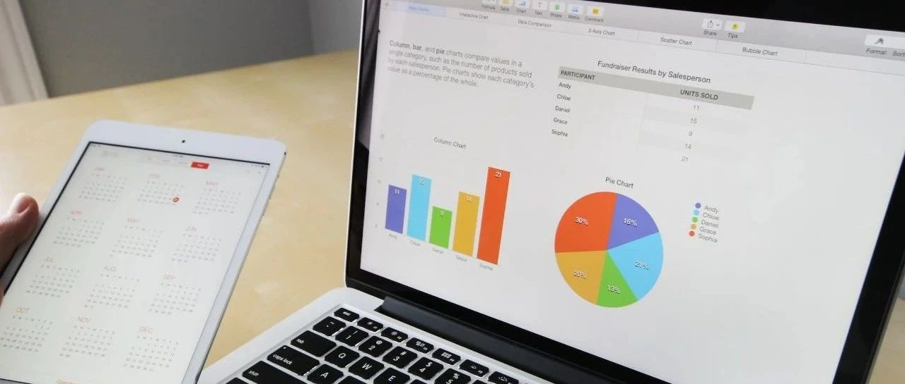

历史性时刻~
据央行发布，央行、国家外汇管理局今天召开2023年下半年工作会议。
在“支持房地产市场平稳健康发展”的部分，内容有：
继续引导个人住房贷款利率和首付比例下行，更好满足居民刚性和改善性住房需求。指导商业银行依法有序调整存量个人住房贷款利率。
存量房贷利率这点要是能实现，那对高位站岗的购房者来说，无疑是一大利好。
央行这般表态，接下来就看四大行的动作了。降低多少、多久能开始实施，这些无疑都是大家关注的焦点。
关于这点，之前一篇文章可以看看：希望来啦~
... ...
室温超导这事有了新进展。
上周，全球物理学界都聚焦一个韩国科学家团队，原因是这个团队表示他们发现了全球首个室温超导材料LK-99。
从线上到线下，从圈内到圈外对此事的质疑声都很大，同时又抱有一份期待。
室温超导材料这种几乎零电阻的材料之所以备受关注，在于一旦室温超导试验成功，将是人类历史上最重要的科技发展里程碑。
因为在理论上，电流经过超导体时，因为没有了电阻，就不会发生热损耗，没有电阻的电流，将点亮新的科技树。
那时，第四次工业革命将上演，将全球所有产业都重塑一遍。科幻片中的很多场景，会在现实中上演：车在空中悬浮，极速行驶；量子计算机将问世等等。
今天美国顶级实验室劳伦斯伯克利国家实验室提交的论文表示，其结果支持LK-99作为室温环境压力超导体，即理论上可行。
这些天，我也在前排吃瓜，蹲点这历史性时刻，毕竟一旦验证，不仅是科幻映入现实，同时，也意味着之前一百多年，人类点错了科技树。
希望室内超导体能实现，毕竟我还想坐宇宙飞船去M87星云抓野生奥特曼，实在不行，去潘多拉看阿凡达也行。
美国超导盘前一度暴涨150%，这架势，我准备搞点玩玩，凑个热闹，要么被割，要么捞点肉吃。
... ...
碧桂园传出将配股融资，随后又取消了配股融资。
最近碧桂园的负面舆情较多，不久前我用模型测过碧桂园的情况，之前跟大家说过了，基本上就是8-11月之间见分晓，现在回头看，差不多。
这个模型是我三年前根据对冲基金的模型模板来做的，前后喂了天量的数据资料，这两年的准确度很高。
不管怎么样，碧桂园尽量挺住，虽然我挺讨厌碧桂园的，质量垃圾，一直以来态度也不行，但房地产行业经不起折腾咯，再这么下去，GG。
截至7月31日，超70家上市房企发布上半年业绩预告，约44家预告净利润为亏损，到时大家可以蹲一个碧桂园的亏损数据。
... ...
京东被传出要收购控股永辉超市。
永辉超市在福建本土，被线上配送的朴朴超市压着打；这些年战略也不理想，超级物种、永辉mini等都没走成功，目前最大的底气是2017年成立、估值10亿美元的彩食鲜。
京东是永辉大股东之一，2015年斥资46亿元收购永辉10%股份，今年一季度财报显示，京东系共持有永辉13.38%股份。
京东这几年线下做得也不理想，惊喜拼拼（已更名京东拼拼）等都不太尽如人意。在阿里收购大润发后，要说京东对控股永辉没有想法，那是不可能的。
... ...
京津冀大暴雨导致的洪涝灾害仍在持续，河北的涿州等受影响很大，大家都注意安全。
江西将发放1亿元消费券，比去年增加3000万元。我是个俗人，相比发券，还是更喜欢发钱。
... ...
昨晚没睡好，小猫崽在叫，估计快睁眼睛了，一晚上我睡得断断续续、迷迷糊糊的。
大清早出门去了趟公司，穿着短袖短裤拖鞋，头发凌乱，一口气拉完一车新产品。
新来的保安小伙子很尽职，以为我是搬运工，让我尽快搬完，我只能卖命地拉，这会腰酸背痛......
最后，放一张前天拍的小猫崽们睡觉的照片，图个乐：